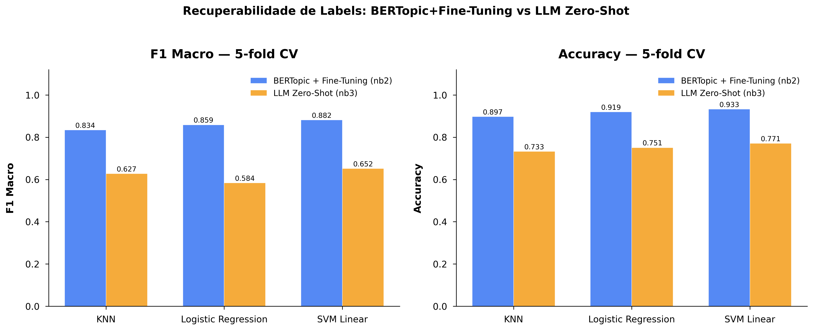
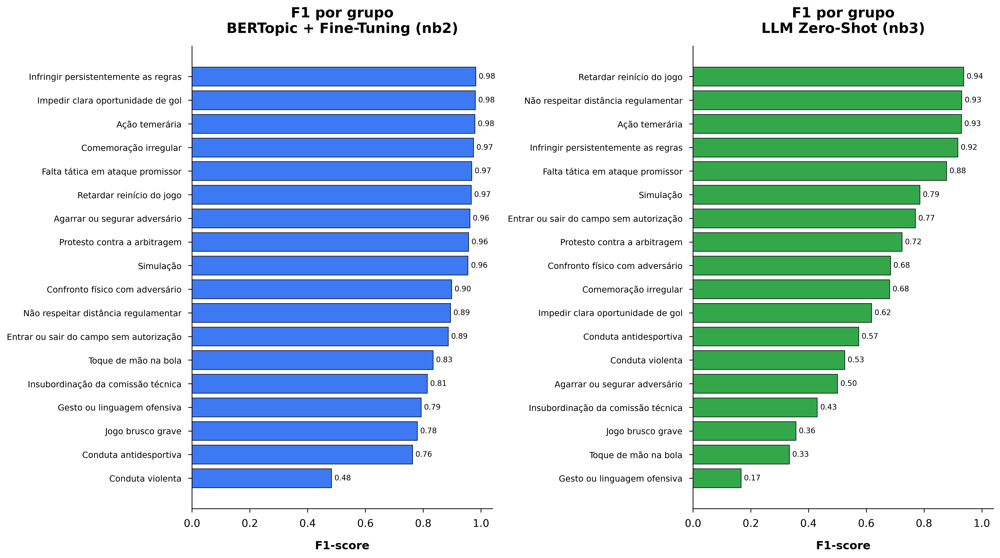

Classificação Semântica de Motivos de Cartão em Súmulas CBF
Gabriel Carbinatto (12725411) · Arthur Martins (14783601)
A mesma infração, redações completamente diferentes
Por que o problema é difícil?
As súmulas registram a justificativa do cartão em linguagem livre. Não há vocabulário obrigatório: cada árbitro redige à sua maneira, com graus de detalhe e termos próprios.
Mesma infração, redações distintas
Os três exemplos ao lado descrevem a mesma infração: Ação temerária. Uma solução precisa capturar o significado, não apenas palavras isoladas.
Objetivo
Classificar automaticamente as justificativas em categorias semânticas e usar esses rótulos para analisar padrões disciplinares por temporada, time e árbitro.
Base de dados: 5.681 súmulas, 2020–2026
Descoberta de IDs
API da CBF retorna metadados por rodada. IDs da Série B descobertos automaticamente por busca em torno da Série A.
Download dos PDFs
Retry exponencial e cache local por tamanho de arquivo. Copa do Brasil via scraping da página de tabela.
Extração por regex
pdfplumber + regex em três camadas: carimbo de tempo, campo Motivo: e justificativa livre do árbitro.
Limpeza
2º cartão amarelo reclassificado de vermelho para amarelo. Frase processual removida, preservando só a infração original.
18 grupos disciplinares baseados nas Leis do Jogo da IFAB
Por que definir antes dos métodos?
A taxonomia é o alvo comum: a LLM zero-shot recebe os nomes dos grupos no prompt, e o pipeline BERTopic produz clusters que são mapeados manualmente para esses mesmos grupos. Ambos os métodos são avaliados sobre a mesma estrutura.
Classificação zero-shot com LLM local
Abordagem
Sem embeddings especializados, sem fine-tuning, sem regras manuais. A LLM recebe apenas o texto da justificativa e os nomes dos 18 grupos, com instrução de responder com o nome exato do grupo.
Configuração
- Modelo:
llama3.2:3bvia Ollama local - Temperatura 0 para resposta determinística
- Cache em disco para reprodutibilidade
- 184 de 6.945 textos sem resposta parseável (2,65%)
Estrutura do prompt
Você é especialista em regras do futebol. Classifique o motivo de cartão abaixo em exatamente um dos grupos listados. Responda APENAS com o nome exato do grupo, sem explicações adicionais.
Motivo: {justificativa}
Grupos:
Ação temerária
Protesto contra a arbitragem
Falta tática em ataque promissor
... 15 grupos restantes ...
BERTopic em duas passagens com fine-tuning contrastivo
Abordagem
Agrupar as justificativas por semântica usando embeddings multilinguais. O encoder é fine-tunado com pares contrastivos extraídos da primeira clusterização, e uma segunda passagem gera os clusters finais mapeados para os 18 grupos.
Configuração
- Encoder:
multilingual-e5-large· 1.024 dimensões - Redução de dimensão: UMAP · clusterização: HDBSCAN
- Seleção de hiperparâmetros por DBCV em grid search
- Fine-tuning: MultipleNegativesRankingLoss · 1 época
- 79 clusters na Passagem 2 → 18 grupos · 504 outliers
Pipeline em 6 etapas
① Embeddings base — vetores com multilingual-e5-large
② Grid search — DBCV otimiza n_neighbors e min_topic_size
③ BERTopic · Passagem 1 — 62 clusters exploratórios geram pares positivos
④ Fine-tuning contrastivo — encoder retreinado com pares por cluster
⑤ BERTopic · Passagem 2 — reclusterização com embeddings ajustados
⑥ Mapeamento manual — 79 clusters revisados → 18 grupos
Passagem 1 (base) vs. Passagem 2 (fine-tunado)

De 79 clusters a 18 grupos interpretáveis
Como o mapeamento foi feito
Cada cluster foi revisado pelos textos mais representativos e pelas palavras-chave geradas pelo BERTopic via c-TF-IDF. A atribuição segue três camadas: mapeamento direto, âncoras lexicais de alta precisão para clusters mistos, e fallback por cosseno para outliers.
Outliers: fallback por cosseno
504 textos sem cluster denso (label -1 no HDBSCAN) foram atribuídos ao grupo mais próximo por similaridade de cosseno no espaço fine-tunado.
-1-1Distribuição dos cartões por grupo disciplinar

Evolução temporal por grupo disciplinar

Diagnóstico por time e por árbitro


Similaridade de cosseno ao centroide ponderado do grupo

BERTopic + fine-tuning vs. LLM zero-shot

Quão bem um classificador aprende os rótulos de cada método?
BERTopic + fine-tuning · SVM Linear
- F1 Macro: 88,2%
- Accuracy: 93,3%
- 15 de 18 grupos com F1 acima de 0,80
LLM zero-shot · SVM Linear
- F1 Macro: 65,2%
- Accuracy: 77,1%
- Distribuição muito heterogênea entre grupos

F1 por grupo: BERTopic vs. LLM zero-shot

O ponto mais frágil é a taxonomia manual
Limitação principal
Os 18 grupos foram definidos manualmente a partir das palavras representativas de cada cluster. Isso funciona bem para grupos com vocabulário claro, mas torna as fronteiras entre grupos próximos dependentes de julgamento humano.
Aprendizado ativo
Em vez de mapear clusters a categorias fixas manualmente, iterações com aprendizado ativo podem refinar as fronteiras com revisão humana concentrada nos casos ambíguos, e permitir que o número de grupos evolua.
Outras extensões
Estruturas hierárquicas de clusters representariam subtipos dentro de Ação temerária sem separações artificiais. Tratar o problema como classificação multirrótulo abriria espaço para justificativas que se enquadram em mais de um grupo.